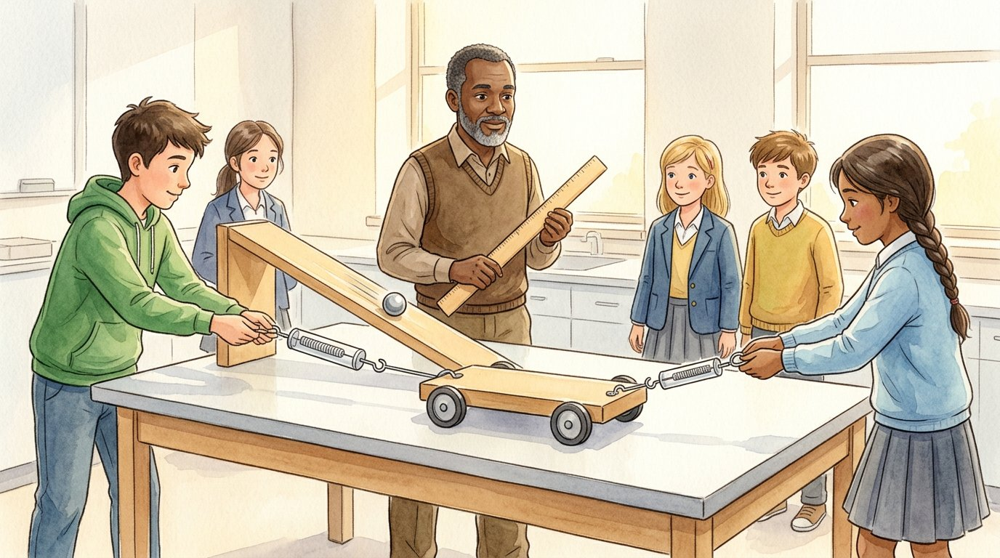

Grade 8 · Science · MS-PS2-2
The ball that never wanted to stop
A story about Galileo's ramps, the force that stops a rolling ball, and why the same push moves an empty cart more than a full one.
La bola que nunca quería detenerse. Un cuento sobre las rampas de Galileo, la fuerza que detiene una bola que rueda y por qué el mismo empujón mueve más un carrito vacío que uno lleno.
Science words you will learn
Tap a green word to see what it means.
Toca una palabra verde para ver qué significa. Con la ayuda activada, verás también la definición en español.
The story
El cuento está en inglés. Pulsa «Listen to the story» para escucharlo y toca las palabras verdes cuando no entiendas una.
On the first Monday of eighth grade, Mr. Mensah's lab table looked like a skate park. Two long wooden ramps leaned against each other to make a V, and a steel ball waited at the top of one side. "In 1638," said Mr. Mensah, "Galileo Galilei published a book about motion. To study falling, he rolled bronze balls down a long wooden groove, smooth as he could make it, and timed them with a water clock."
He let the ball go. It rushed down the first ramp, crossed the bottom and climbed the second one. Daniel held a ruler next to it. The ball climbed almost back to the height where it had started. Mr. Mensah made the second ramp steeper, then less steep, and every time the ball rose to nearly the same height.
"Now watch," said Mr. Mensah, and he lowered the second ramp until it was almost flat. The ball rolled and rolled, all the way to the end of the table, where Salma caught it. "Galileo asked a strange question," said Mr. Mensah. "What if the second ramp were perfectly flat and perfectly smooth? The ball would never reach its starting height again, so it would just keep rolling forever."
"But real balls stop," said Israel. "Because something stops them," said Mr. Mensah. " is a that acts against motion, between the ball and the table, and between the ball and the air. A ball doesn't stop because it gets tired. It stops because a force slows it down." He wrote a word on the board: . "Objects keep doing what they are doing, moving or still, until a force changes it."
Next, he brought out two carts. One was empty, and the other carried a stack of textbooks. Athena pushed each one with a spring scale, always pulling the needle to the same number. With the same push, the empty cart sped across the floor, but the cart full of books barely moved. "More ," said Sophia, "means the same force changes its motion less."
Then Elías and Selena hooked spring scales to the two ends of the empty cart and pulled in opposite directions. Both scales read 5 newtons, and the cart didn't move at all. Then Elías pulled harder, and the cart rolled toward him. "When the forces are equal and opposite, they are , and the motion doesn't change," said Mr. Mensah. "When one side wins, the forces are , and the cart speeds up, slows down or changes direction."
"Galileo died in 1642," Mr. Mensah said. "Around that time, Isaac Newton was born in England. In 1687, Newton turned Galileo's idea into his first law of motion: an object keeps moving in a straight line at the same speed, or stays still, unless a force acts on it."
The bell rang, and Israel picked up the steel ball. "So, on a perfect ramp, this ball would still be rolling," he said. "Somewhere, in Galileo's head, it still is," said Mr. Mensah. Sophia wrote in her notebook: Things don't stop on their own. Look for the force.
Glossary
- force
- A push or a pull on an object. Forces are measured in newtons.
- fuerza: Un empujón o un tirón sobre un objeto. Las fuerzas se miden en newtons.
- friction
- A force between two surfaces that rub together. It acts against motion and slows objects down.
- fricción (rozamiento): Una fuerza entre dos superficies que se rozan. Actúa en contra del movimiento y frena los objetos.
- inertia
- The tendency of an object to keep doing what it is doing: to stay still, or to keep moving at the same speed in the same direction.
- inercia: La tendencia de un objeto a seguir haciendo lo que hace: quedarse quieto o seguir moviéndose a la misma velocidad y en la misma dirección.
- mass
- The amount of matter in an object. An object with more mass is harder to speed up, slow down or turn.
- masa: La cantidad de materia de un objeto. Un objeto con más masa es más difícil de acelerar, frenar o desviar.
- balanced forces
- Forces on an object that cancel each other out, so its motion does not change.
- fuerzas equilibradas: Fuerzas sobre un objeto que se anulan entre sí, de modo que su movimiento no cambia.
- unbalanced forces
- Forces on an object that do not cancel out. They change its motion: it speeds up, slows down or changes direction.
- fuerzas no equilibradas: Fuerzas sobre un objeto que no se anulan. Cambian su movimiento: acelera, frena o cambia de dirección.
Questions
Choose the correct answer. If you make a mistake, the story shows you where the answer is.
Elige la respuesta correcta. Si te equivocas, el cuento te muestra dónde está la respuesta.
-
Question A. What happened when the ball rolled down one ramp and up the other?
¿Qué pasó cuando la bola bajó por una rampa y subió por la otra?
Every time, the ball rose to nearly the same height where it had started, whatever the slope of the second ramp.
-
Question B. According to Galileo, what would happen on a perfectly flat, perfectly smooth ramp?
Según Galileo, ¿qué pasaría en una rampa perfectamente plana y perfectamente lisa?
The ball could never climb back to its starting height, so, with nothing to slow it down, it would keep rolling forever.
-
Question C. Why does a real rolling ball stop?
¿Por qué se detiene una bola real que rueda?
Friction between the ball and the table, and between the ball and the air, is a force that slows it down.
-
Question D. With the same push, why did the cart full of books barely move?
Con el mismo empujón, ¿por qué el carrito lleno de libros casi no se movió?
Athena used the same force on both carts. The cart with more mass changed its motion less.
-
Question E. Why didn't the cart move when both scales read 5 newtons?
¿Por qué no se movió el carrito cuando las dos balanzas marcaban 5 newtons?
Equal forces in opposite directions are balanced: they cancel out, so the motion doesn't change.
Challenge: explain your thinking
Plan an investigation
You want to test this question: does adding mass to a cart change how much the same push changes its motion? Plan your investigation. What will you change, what will you keep the same, and what will you measure?
Planea una investigación. Quieres poner a prueba esta pregunta: ¿añadir masa a un carrito cambia cuánto modifica su movimiento un mismo empujón? Planea tu investigación. ¿Qué vas a cambiar, qué vas a mantener igual y qué vas a medir?
Answer in your notebook or talk it over with a classmate. Use evidence from the story.
Responde en tu cuaderno o coméntalo con un compañero. Usa evidencia del cuento.
Check your thinking
Change only the mass: for example, add one, two and three textbooks. Keep the same the push (the same reading on the spring scale), the cart, the floor and the starting point. Measure how far the cart rolls, or how fast it goes, after each push. If the carts with more mass roll a shorter distance, the evidence shows that more mass means the same force changes motion less. Repeat each trial three times to make sure.